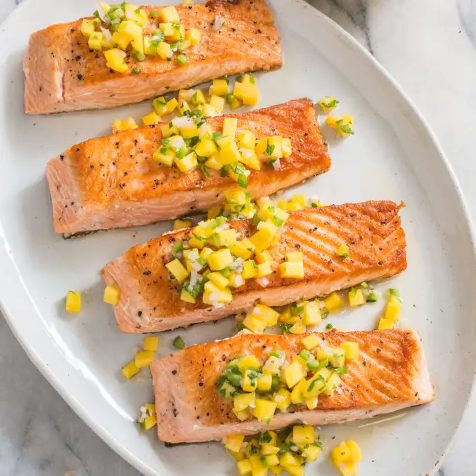

Pan-Seared Salmon

Ingredients:
- 4 (6-8 ounce) skin-on salmon filets
- kosher salt
- ground black pepper
- lemon wedges/lemon juice
Directions:
- Dissolve 1/2 cup salt in 2 quarts water in large container. Submerge salmon in brine and let stand at room temperature for 15 minutes. Remove salmon from brine and pat dry with paper towels.
- Sprinkle bottom of 12-inch nonstick skillet evenly with 1/2 teaspoon salt and 1/2 teaspoon pepper. Place fillets, skin side down, in skillet and sprinkle tops of fillets with 1/4 teaspoon salt and 1/4 teaspoon pepper.
- Heat skillet over medium-high heat and cook fillets without moving them until fat begins to render, skin begins to brown, and bottom 1/4 inch of fillets turns opaque, 6 to 8 minutes.
- Using tongs, flip fillets and continue to cook without moving them until centers are still translucent when checked with tip of paring knife and register 125 degrees, 6 to 8 minutes longer.
- Transfer fillets skin side down to serving platter and let rest for 5 minutes before serving with lemon wedges.